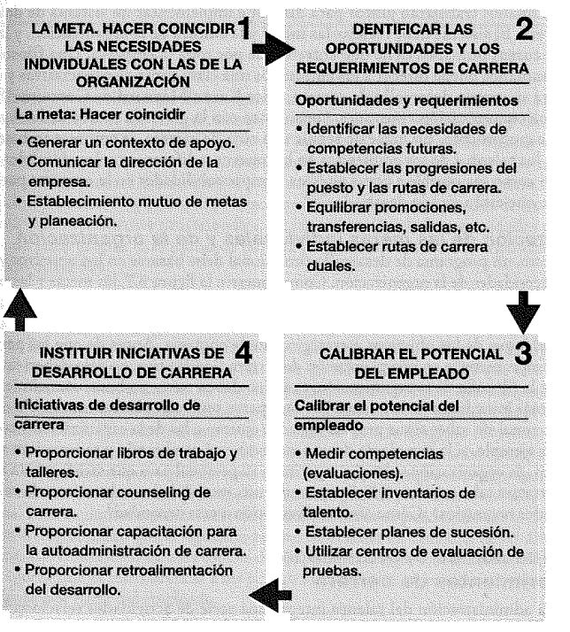

Administración de Recursos Humanos (GDP1)

Análisis del puesto
Antes de todos los procesos, hay que definir adecuadamente el puesto, ya que esto implica directamente en el resto de los siguientes procesos. De hecho, un
proceso de análisis del trabajo se relaciona con un mejor desempeño de trabajadores y organización. Una herramienta para analizar correctamente el puesto es con
el Scorecard. Esta muestra:
- Misión del trabajo: Describe la esencia del trabajo y por qué el rol existe. Es decir, qué exactamente va a hacer el candidato tomando el rol.
- Resultados: Desarrollar 3-5 objetivos que una persona debe completar. Más concretamente, qué necesidades deben ser completadas en los
primeros 3/6/12 meses, o cuánto retorno debiera lograr a fin de año.
- Competencias: Identificar las competencias apropiadas para poder lograr los resultados. Ejemeplo, Cuáles competencias son críticas y relacionadas
con el trabajo para el rol, o Qué valores son esenciales para una relación a largo plazo, independiente del rol.
Luego, existe también la descripción del puesto, la cual define:
- Breve Background y descripción de la compañía
- Funciones de la posición: la sección más larga, detallada y específica. Debe decir tareas diarias, además de mencionar si debe tratar con
público o sólo personal interno.
- Competencias requeridas: Requerimientos técnicos, educacionales que pueden ser excluyentes o solo deseados para un perfil adecuado. Aquí se
puede incluir el ambiente de la compañía que se desea tener.
- Estructura organizacional: Para orientar el nivel jerárquico del rol buscado.
- Criterio de evaluación: Mientras más específico, mejor. Aquí se muestra qué es lo más importante tanto para la empresa como para el empleado.
Lógicamente, la evaluación debe estar enfocada en lograr el éxito del negocio.
- Compensación: Es mejor plantear rangos o incluso niveles de salario/compensaciones
- Ubicación física y alrededores
Para realizar cualquiera de ambas herramientas, se le puede preguntar a los Analistas de Puestos, Empleados o Supervisores a través de Entrevistas, Cuestionarios,
Observaciones o Diarios.
Hay que destacar que las descripciones de puestos pueden confundir si están mal redactados, se podría olvidar actualizarlos, además de que limita la flexibilidad
del puesto y así, de la organización.
Reclutamiento


Es 77% de las empresas con programas de mentoring exitosos reportaron que aumentaron de manera efectiva la retención de empleados. Por otra parte,
la presentación realista de trabajo aumenta la retención un 10% aparte de que los candidatos mostrarían su capacidad para la fase de Selección. Por
último, existe el counseling, especialmente necesario para jóvenes orientados a tareas desafiantes, que impliquen responsabilidad y sentido de empoderamiento.
Dicho counseling trata sobre analizar los deseos y metas personales y de carrera entre el empleador y empleado para que la estrategia organizacional se alinee.
Selección

El costo de contratar mal a alguien en una posición intermedia es de aproximadamente 20.000 USD y 100.000 USD si es alto directivo. Es por esto que el objetivo
de la selección es maximizar los aciertos de la búsqueda del empleado con características concretas.
Respecto a la validez de las pruebas, es decir, la capacidad de predecir el comportamiento laborar relevante, esta debe ser pertinente con el puesto, basarse en
evidencia teórica y empírica de la organización, y tener capacidad de correlación entre las variables usadas y el éxito en el puesto.
Los posibles tipos de pruebas son las de conocimiento del puesto, muestra de trabajo, centros de evaluación, habilidad cognitiva, biodatos, personalidad e intereses,
honestidad e integridad, detector de mentiras, habilidades físicas, exámenes médicos y de detección de drogas. Se dice que mientras más pruebas se realicen,
menos posibilidad hay que demanden por discriminación. Independiente de eso, KeyBank logró ahorros de 1,75 millones USD por menor rotación al usar
herramientas virtuales de prueba.

Durante la entrevista, es importante capacitar al entrevistador. Se requiere que comprenda el puesto, establezca un plan de entrevistas, establecer y mantener un
buen ambiente, atender lenguaje no verbal, proveer información libre y honesta, utilizar preguntas neutras, separar hechos de deducciones, reconocer sesgos y
estereotipos, evitar el error de halo, controlar el curso de la entrevista y estandarizar las preguntas. Hay que destacar que la contratación formal y técnicas
de selección mejora la percepción y lealtad a la organización.
Sobre la verificación de referencias, se puede preguntar sobre la relación con el candidato, fechas de empleo, títulos y responsabilidades, áreas sobresalientes y
por mejorar, mayor logro, capacidad social, manejo de conflictos/stress, responsabilidad, puntualidad, razón de desvinculación, recontratabilidad, entre otros.
Sobre la decisión misma de contratación, está el enfoque clínico y el estadístico. El enfoque clínico deja a libre interpretación la información de los candidatos,
lo cual normalmente tiene sesgos/estereotipos y lleva a un equipo de trabajo heterogéneo junto con posible discriminación. El enfoque estadístico es objetivo con
los datos recopilados, ya que los cuantifica y pondera de la forma apropiada. Además, está el hecho de, que si te va mal en cierto aspecto, puedes compensarlo en
otro. También se le puede agregar que haya fases de selección si las pruebas son muy costosas, para que se vayan filtrando lo más posible los candidatos y no
gastar de más. Lo malo del enfoque estadístico es que hay que siempre actualizar los criterios a ponderar.
Capacitación y Desarrollo

El objetivo del entrenamiento es contribuir a los objetivos generales estratégicos de una organización. La primera fase del enfoque de sistemas es la
evaluación de necesidades. Aquí se analiza la organización para decidir dónde es necesaria, su relación con metas estratégicas y cómo se usarían mejor los
recursos. La segunda es para identificar qué conocimientos, habilidades y capacidades se requieren. Por último, a quiénes es necesario capacitar. Por cada $1
invertido en capacitación, alrededor de $10 regresaron en productividad para la empresa.
La segunda fase de diseño contempla 3 áreas. Una son los objetivos instruccionales, es decir, las habilidades, conocimientos y actitudes que se quiera impactar.
Luego la disposición y motivación de los capacitados. Lo siguiente son las características de los instructores, los cuales son tener conocimiento del tema,
adaptabilidad, sinceridad, sentido del humor, interés, instrucciones claras, ayuda individual y entusiasmo. El cuarto punto son los principios de aprendizaje
que están abajo.

- Establecimiento de metas: crea un mayor interés, comprensión y empeño el explicar por qué se hace la capacitación.
- Importancia de la presentación: Un medio cómodo, familiar y relacionado con el anterior.
- Modelado: ejemplificar es muy práctico. Incluso si se ejemplifica qué no hacer es útil.
- Diferencias individuales: como todos aprenden diferente, hay que ocupar medios diferentes para llegar a todos.
- Práctica activa y repetición: con la práctica se pueden descubrir sutilezas
- Aprendizaje global contra el parcial: en lo posible dividir la capacitación en sub áreas para separar las que son más complejas.
- Aprendizaje masivo contra distribuido: enseñar el contenido en pequeñas dosis da resultados más rápido y con mayor retención.
- Retroalimentación y refuerzo: como el aprendizaje no es lineal, se debe considerar el poder retroceder o anticipar una estancación del aprendizaje.
También, hay que considerar que conductualmente si se premia una buena actitud, esa actitud se va a ver más seguido, sobre todo si se premia inmediatamente.
Sobre la implementación. Métodos de capacitación para no gerentes son la capacitación en el puesto, capacitación de aprendizaje práctico; cooperativa, prácticas profesionales y
capacitación gubernamental, instrucción en el aula, programada, audiovisual, simulación, E-learning. Para gerentes, están las experiencias en el puesto,
seminarios/conferencias, estudio de casos, juego de rol improvisado o deseado, programas de ayuda educativa
Por último, la evaluación, se tiene las reacciones en el sentido de la satisfacción generada que equivale en más posibilidades de usar los aprendizajes,
junto con la posibilidad de retroalimentación, aunque no es determinante. Luego está el aprendizaje para verificar si aprendieron mediante exámenes,
idealmente comparándolo con uno antes de la capacitación. Siguiente está el comportamiento, lo cual es si ocupan lo aprendido o no, donde puede ser culpa del
empleador no ser capaz de usar dichos conocimientos. Finalmente, el rendimiento de la capacitación, ya sea la variación de utilidad, producción, calidad,
rotación u otro recurso.
Las buenas prácticas de capacitación son preparar, reafirmar, orientar, desempeñar, evaluar, reforzar y revisar.
Otros tipos de capacitación son la inducción, integración (onboarding), capacitación de habilidades básicas, capacitación cruzada, de equipos, ética y diversidad.

La evaluación de desempeño se realiza en relación con los requerimientos del puesto para entregar retroalimentación mutua entre la empresa y empleado. Si el
desempeño se administra bien, se tiene entre 40-50% más probabilidades de superar a sus competidores en las áreas de ingresos, productividad y rentabilidad y
valor de mercado. También, a menor retroalimentación, menor participación del empleado, incluso sería mejor retroalimentación negativa.
Sobre los estándares de desempeño, está la relevancia estratégica, es decir, que lo que se mide está acorde con los objetivos estratégicos. Deficiencia de
criterios que significa no medir aspectos clave. Contaminación de criterios en el sentido de que las variables a medir no dependen solo del empleado. Confiabilidad
respecto a la estabilidad o consistencia que las personas tienen cierto desempeño en el tiempo, el cual puede ser recalibrado entre gerentes.


Al incluir a los asociados, se crean evaluaciones más objetivas, empleados más efectivos, clientes más satisfechos y mejor desempeño. En cualquier caso, hay
que siempre ocupar anonimato, comprometer a los encuestados, evitar manipulación del sistema, utilizar procedimientos estadísticos objetivos, identificar y
cuantificar prejuicios y capacitar a los evaluadores para que el proceso no sea destructivo. El último punto es importante, ya que, en empresas medianas
y grandes, más de la mitad de los gerentes dicen que no se evalúa a los evaluadores.
Consideraciones para evaluar son las mismas que la entrevista de trabajo. Error de tendencia central llevándolos todos al centro, indulgencia/severidad,
distribución forzada donde se deben agrupar a las personas, foco en eventos recientes en vez de todo el periodo evaluado, contraste con el anterior evaluado,
similitud con el evaluador.

Lo más importante del método de evaluación es que sea lo suficientemente simple para que se pueda realizar sistemáticamente, recién ahí hay que mejorar los criterios.
Un sistema nunca ha fracasado por ser demasiado sencillo. Aparte de lo anterior, una fijación de objetivos mejora el desempeño entre un 10 y 25%.
Finalmente, se tiene la entrevista de evaluación, es decir, el momento en el que se le informa la evaluación al empleado y se resuelve qué hacer con ella. Está
el tipo de entrevista, el cual puede ser: hablar/vender es unidireccionalmente decirle al empleado qué hacer ahora, hablar/escuchar es preguntar por qué tiene
la evaluación y solución de problemas es para estimular el crecimiento y desarrollo del empleado según sus problemas, necesidades, satisfacciones y molestias.
Los empleados quedan más satisfechos y justifican el procedimiento si pueden opinar en él. Es más, se debiera hablar un 35% y el resto se debe
escuchar al empleado.
Además, se debe considerar si la crítica es en realidad necesaria, adaptarla a la persona, ser específica y no exagerar, realizarlas
en buen momento y que el objetivo sea mejorar. Se debe cambiar el comportamiento, no la persona. Aterrizar los planes de crecimiento a puntos y periodo concreto.
Por último, el desempeño no siempre es culpa de la capacidad del empleado, puede ser por su motivación o el ambiente de trabajo o externo.
Gestión de Compensación
La gestión de compensación cumple 5 objetivos. Recompensar a los empleados según el valor que genera a la empresa, Lograr las metas de negocio motivando,
enganchando y atrayendo al personal; Promover alto rendimiento, apoyar y desarrollar la cultura organizacional y Definir el correcto comportamiento y resultados.
Hay que destacar que los incentivos al esfuerzo, si bien aumentan el rendimiento (Prentice et al, 2007) (Lazear, 1999), puede no ser el suficiente para que
valga la pena. Aspectos negativos es que no favorecen el trabajo en equipo ni calidad, es un incentivo que no necesariamente prevalece en el futuro y si
se gestiona mal termina siendo peor, lo cual suele ser el caso.
Para evitar problemas en la implementación del diseño de compensación, es necesario evitar la sobre complejidad, desalineación HR/Negocio y forzarla
prematuramente. Luego, ir probándolas pon pilotos en pequeñas áreas de le empresa. Además, hay que ser apropiado a la cultura de la empresa;
equitativo, justo, consistente y transparente, ascensos legítimos, flexible, desarrollo continuo, clarificar la metodología, y poder ser monitoreable.